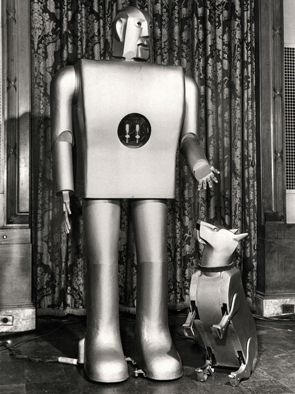
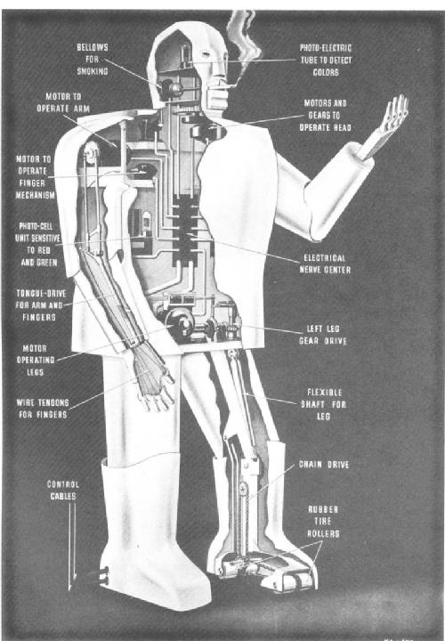
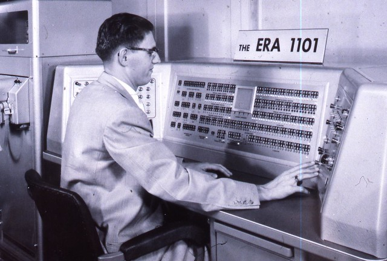
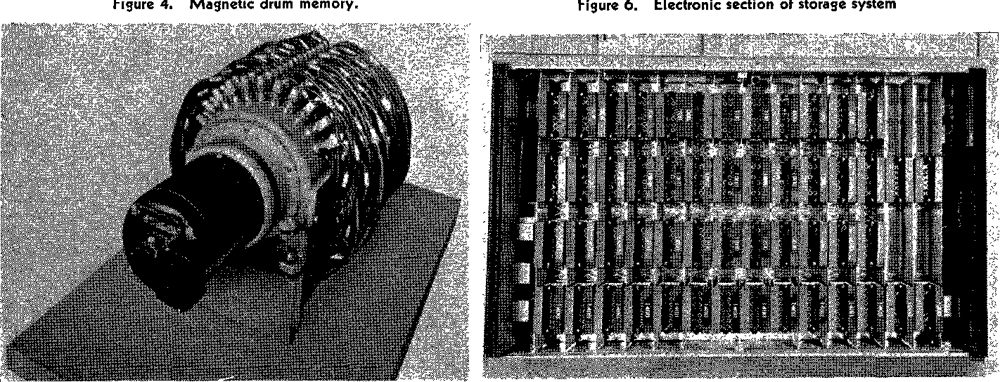

First appearing at the 1939 world's fair,Elektro was a marvel of his time. Elektro had a brain made up of electronic relays that helped him to perform tasks. Elektro was able to interperet voice commands and respond using messages recorded on 78rpm records. Elektro could walk around and count to five on his fingers, smoke a cigarrette or blow up a balloon when asked. Elektro was built in 1937-1938 by the Westinghouse Company for presentation at the world's fair. Elektro was also accompanied by his robot dog Sparko, who could bark, sit, and beg to humans. 
Designed by ERA and built by Remington-Rand, the ERA 1101 was one of the first commercially produced computers. The first customer to purchase the ERA 1101 was the US Navy. The computer was 38 ft long, 20 ft wide, weighed about 8.4 short tons and used 2700 vacuum tubes for its logic circuits. Its drum memory was 8.5 in in diameter, rotated at 3500 rpm, had 200 read-write heads, and held a memory size equivalent to 48 kB with access time between 32 microseconds and 17 milliseconds. This drum memory was one of the earliest magnetic storage devices to be used on a computer. The ERA 1101 had punchable tape strips that it used in combination with the magnetic drum to keep things in its memory.
The IBM Personal Computer, also known as the IBM PC, is the original version of the IBM PC compatible hardware platform. It was launched August 21, 1981, and quickly took over the market for Personal computers. The machine was based on open architecture, so many third party suppliers began to make "IBM Compatible" hardware, which was an important selling point later in the 80s as IBM became the standard for computer.